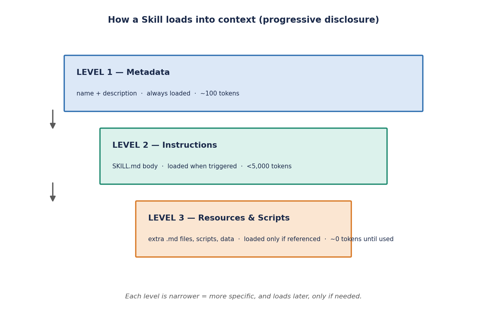
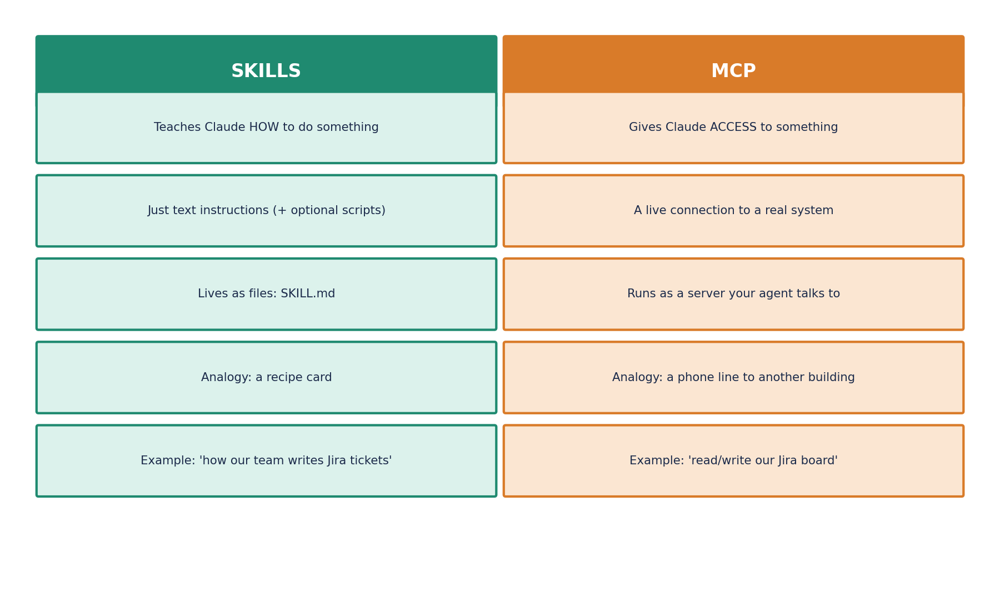

Claude Skills
Overview
A Skill is a packaged piece of know-how you hand to Claude once, so it doesn't have to be re-explained in every conversation. Instead of retyping your team's status-report format, your commit-message conventions, or your incident postmortem template into every prompt, you write it down one time as a Skill, and Claude reaches for it automatically whenever a matching request comes in. This page covers what a Skill actually is, how Claude decides when to load one, how to write your first one, several complete worked examples beyond the basic template, how Skills relate to MCP, and the practical do's and don'ts for writing ones that actually trigger reliably.
What Is a Skill, Really?
Think of a Skill like a recipe card you hand a very capable chef. The chef (Claude) already knows how to cook — knife skills, heat control, seasoning instinct — but a recipe card tells them exactly how your family likes a specific dish made: which shortcuts to skip, which ingredient to always double, how to plate it. A Skill is that recipe card for a repeatable task: it doesn't teach Claude a new fundamental capability, it teaches Claude your specific way of doing something it can already do in general.
Concretely, a Skill is a directory containing a SKILL.md file: YAML frontmatter (a name and a description) followed by a Markdown body of instructions, examples, and — optionally — references to bundled scripts or reference files in the same directory.
Without a Skill, asking Claude for a weekly status update produces a reasonable but generic summary — different structure every time, no guarantee it matches how your team actually reads updates. With a Skill installed (say, a weekly-status Skill that encodes your team's Done/Doing/Blocked format), the same request produces a consistently formatted update every single time, because Claude is following your team's actual template rather than inventing a plausible-looking one from scratch.
How Claude Discovers and Loads a Skill
Claude doesn't load every installed Skill's full instructions into every conversation — that would waste context on work unrelated to the current request. Instead, Skills use a three-level progressive disclosure model:
- Level 1 — Metadata (always loaded): just the
nameanddescriptionfrom every installed Skill's frontmatter sit in context at all times. This is cheap — typically well under 100 tokens per Skill — so Claude can have dozens of Skills installed without meaningfully impacting every other conversation. - Level 2 — SKILL.md body (loaded on trigger): when a request's wording matches a Skill's description closely enough, Claude reads the full instructions body into context for that turn. Anthropic recommends keeping this body under roughly 5,000 tokens so a triggered Skill stays cheap even when it does fire.
- Level 3 — Bundled files (loaded on reference): a Skill directory can bundle extra reference docs, templates, or scripts alongside
SKILL.md. These are only read into context if the Level 2 instructions actually point Claude at them for the current task — keeping rarely-needed detail out of the common path entirely.

This is exactly why a Skill's description field matters so much — it is the only thing standing between "Claude finds this Skill when it should" and "Claude never triggers it, or triggers it for the wrong requests." A vague description like "helps with reports" triggers unpredictably; a specific one like "Writes a weekly status update in our team's standard format (Done / Doing / Blocked). Use when the user asks for a weekly status, standup summary, or team update." gives Claude concrete phrases to pattern-match against.
Creating Your First Skill
The basic workflow for authoring a Skill:
- Identify a repeatable task you (or your team) ask Claude to do the same way, over and over — a report format, a code-review checklist, a document template.
- Create the Skill's directory — for Claude Code or a personal setup this is a folder under
.claude/skills/<name>/(project-scoped) or~/.claude/skills/<name>/(personal, available across all projects). - Write
SKILL.mdwith YAML frontmatter (name,description) followed by clear, numbered instructions and at least one concrete input/output example. - Keep the instructions short and unambiguous — a Skill is not the place for exhaustive prose; it's the place for a tight, deterministic recipe.
- Test it by asking Claude the kind of question your description targets, and confirm the Skill actually triggers and produces the expected output.
- Iterate on the description if it doesn't trigger reliably — this is almost always a wording problem, not a Claude problem.
Complete Worked Example — weekly-status
Here is a full, minimal Skill from start to finish:
---
name: weekly-status
description: Writes a weekly status update in our team's standard
format (Done / Doing / Blocked). Use when the user asks for a
weekly status, standup summary, or team update.
---
# Weekly Status Skill
## Instructions
1. Ask for this week's completed items if not provided.
2. Structure the output as three headed sections: Done, Doing, Blocked.
3. Keep each bullet to one line. No filler sentences.
4. If nothing is Blocked, omit that section entirely rather than
writing "Nothing blocked."
## Example
Input: "shipped the login fix, still working on the dashboard"
Output:
### Done
- Shipped the login bug fix
### Doing
- Building the dashboard
Notice what this Skill is not doing: it isn't teaching Claude what a status update is in general — Claude already knows that. It's encoding one team's specific formatting preference (three named sections, one-line bullets, omit empty sections) so every status update this Skill produces looks the same, regardless of who asked for it or how they phrased the request.
More Worked Examples — Additional Skill Files
The single weekly-status example above is the classic teaching case, but it's worth seeing a few more complete, realistic Skills to get a feel for the range of tasks Skills are good for — from developer workflow, to code review, to operational writing.
Example — commit-message-writer
---
name: commit-message-writer
description: Writes a Conventional Commits-formatted git commit
message from a diff or a plain description of a code change.
Use when the user asks to write, draft, or clean up a commit
message, or pastes a git diff and asks what to commit it as.
---
# Commit Message Writer
## Instructions
1. Identify the primary type of change: feat, fix, refactor, docs,
test, chore, or perf. If more than one applies, pick the one
that best represents the *intent* of the change, not every file
touched.
2. Write a one-line summary in the form `type(scope): summary`,
imperative mood, no trailing period, under 72 characters.
3. If the change needs more explanation than fits on one line, add
a blank line and a short body in plain sentences — what changed
and why, not a restatement of the diff.
4. If the change breaks backward compatibility, add a
`BREAKING CHANGE:` footer describing the impact and the
migration path.
5. Never invent scope or detail that isn't evidenced by the diff
or the user's description — if the scope is unclear, omit it
rather than guessing.
## Example
Input: "added retry logic with exponential backoff to the payment
gateway client, previously it failed on first timeout"
Output:
feat(payment-gateway): add exponential backoff retry to client calls
Previously the gateway client failed immediately on the first
timeout. Retries now use exponential backoff with a capped max
delay, reducing false failures caused by transient network blips.
Example — code-review-checklist
---
name: code-review-checklist
description: Reviews a pull request or code diff against our
team's standard checklist (tests, error handling, naming,
security, backward compatibility). Use when the user asks for a
code review, PR review, or to check a diff before merging.
---
# Code Review Checklist
## Instructions
1. Read the full diff before commenting on any single line —
flag issues that only become visible in context (e.g. a helper
introduced in one file but never used).
2. Walk the checklist in this fixed order and report a short
verdict for each: Tests present & meaningful / Error handling on
new I/O or external calls / Naming is clear & consistent with
surrounding code / No obvious security issue (secrets, injection,
unvalidated input) / Backward compatible, or breaking change is
flagged.
3. For each checklist item, either say "OK" with one sentence of
justification, or flag it with the specific line/file and a
concrete suggested fix — never a vague "consider improving this."
4. End with a single top-line verdict: Approve, Approve with minor
comments, or Request changes — and justify which of the three in
one sentence.
5. Do not comment on pure style preferences (spacing, quote style)
unless they violate an explicit project convention shown in the
diff's surrounding code.
## Example
Input: a diff adding a new `/refund` endpoint with no test file
Output:
- Tests present & meaningful: Missing — no test file added for the
new endpoint. Flag: add at least a happy-path and an invalid-amount
test.
- Error handling: OK — invalid refund amounts return a 400 with a
clear message.
- Naming: OK — consistent with existing `/charge` endpoint naming.
- Security: Flag — refund amount is read directly from the request
body with no upper-bound check against the original charge amount.
- Backward compatible: OK — new endpoint, no existing contract changed.
Verdict: Request changes (missing tests, unbounded refund amount).
Example — incident-postmortem-writer
---
name: incident-postmortem-writer
description: Drafts a blameless incident postmortem from a rough
timeline of what happened during an outage or production
incident. Use when the user asks to write a postmortem,
incident report, or root-cause writeup.
---
# Incident Postmortem Writer
## Instructions
1. Structure the output under fixed headings, in this order:
Summary, Timeline, Root Cause, Impact, Resolution,
Action Items.
2. Summary is 2-3 sentences max: what broke, for how long, who
was affected — no jargon a non-on-call reader wouldn't follow.
3. Timeline is a bulleted list of timestamped events, in
chronological order, in the reporter's stated timezone.
4. Root Cause describes the underlying technical cause, not just
the trigger — distinguish "what set it off" from "why the
system was vulnerable to it."
5. Write in a blameless tone throughout: describe what the system
or process did, never what a specific person did wrong.
6. Action Items must each have an owner placeholder and be
phrased as a concrete change ("add a circuit breaker on the
downstream call") rather than a vague intention ("be more
careful").
## Example
Input: "DB connection pool exhausted at 2:14pm after a deploy
removed a connection timeout, service was degraded for 40 min
until we rolled back at 2:54pm"
Output:
### Summary
A configuration change removed a database connection timeout,
causing the connection pool to exhaust under normal load and
degrading the service for 40 minutes.
### Timeline
- 2:14pm — Deploy goes out removing the DB connection timeout
- 2:14pm-2:54pm — Connection pool exhausts, requests queue and
time out, service degraded
- 2:54pm — Deploy rolled back, service recovers
### Root Cause
The removed timeout allowed connections to be held indefinitely by
slow queries, so the pool never released connections fast enough
to serve new requests once load arrived.
### Impact
~40 minutes of degraded service; downstream requests timed out or
were slow during the window.
### Resolution
Rolled back the deploy, restoring the previous connection timeout.
### Action Items
- Owner: TBD — restore and enforce a connection timeout via config
validation in CI so it cannot be silently removed again.
- Owner: TBD — add an alert on connection pool utilization
crossing 80%.
Skills vs. MCP — What's the Difference?
Skills and MCP solve different problems and are frequently confused because both extend what Claude can do. The short version: a Skill gives Claude know-how; an MCP server gives Claude reach.
| Skill | MCP server | |
|---|---|---|
| What it is | Instructions + know-how, written in Markdown | A live connection to an external tool or data source |
| Gives Claude | A specific way to do a task it can already do in general | The ability to actually reach and act on a system it couldn't touch before |
| Where it lives | A local SKILL.md file (or uploaded to claude.ai / the Claude API) | A separate server process Claude connects to over the protocol |
| Reaches the internet / live systems | No — it's static instructions | Yes — that's the entire point |
| Analogy | A recipe card | A USB-C port to a real appliance |
| Typical example | "Write status updates in our format" | "Read unread messages from our Slack workspace" |

The two combine naturally: a Skill can describe how to do something that itself calls out to an MCP server to fetch live data. This repository's own match-pass Skill is a working example of exactly that pattern — it's a Skill (know-how for validating reconciliation match-pass logic) that also expects to operate over live Jira ticket data and generate SQL, rather than being a purely self-contained set of instructions. See also the MCP (Model Context Protocol) page for the full picture of how Claude reaches external tools and systems.
Where Skills Live
| Surface | How Skills are installed | Scope |
|---|---|---|
| Claude Code | Directory under .claude/skills/<name>/ (project) or ~/.claude/skills/<name>/ (personal) | Project-scoped or personal, depending on location |
| claude.ai | Zip the Skill directory and upload it under Settings → Features | Personal to the uploading user's account |
| Claude API | Managed via the Skills API | Workspace-wide — available to any API call in that workspace |
Best Practices for Writing Skills
- Write a short, unambiguous description. This is the single highest-leverage thing you can do — it's the only signal Claude uses to decide whether to trigger the Skill at all, so vague or overly broad descriptions cause both missed triggers and false triggers.
- Keep
SKILL.mditself short, and push large reference material (style guides, long glossaries, sample data) into separate bundled files that are only loaded when actually referenced — this keeps the common case cheap. - Put deterministic logic into scripts, not prose instructions. If a step is "run this exact calculation" or "always format dates as ISO-8601," a small bundled script that does it exactly right beats a paragraph of prose the model has to re-derive correctly every time.
- Only install Skills from trusted sources. A Skill's instructions run with the same trust as any other prompt content — a malicious Skill could instruct Claude to exfiltrate data or take harmful actions, so treat Skill authorship with the same scrutiny you'd apply to a code dependency.
Common Interview Questions
description field being too vague or not covering the phrasing users actually use. Fix it by rewriting the description to name the concrete task and include a few of the trigger phrases you expect ("Use when the user asks for a weekly status, standup summary, or team update"), rather than a generic one-liner like "helps with reports." Testing the exact phrasing your users would naturally type, and iterating the description against that, resolves the large majority of triggering issues.Key Takeaways
SKILL.md file: YAML frontmatter + Markdown instructions), not a new capability — it teaches Claude your specific way of doing something it can already do in general. Progressive disclosure keeps cost low: metadata is always loaded, the full body loads only on trigger, bundled files load only on reference. The description field is the single most important thing to get right, since it's the only trigger signal. Skills give know-how; MCP gives reach — they combine rather than compete. Keep instructions short, push determinism into scripts, and only trust Skills from sources you trust.